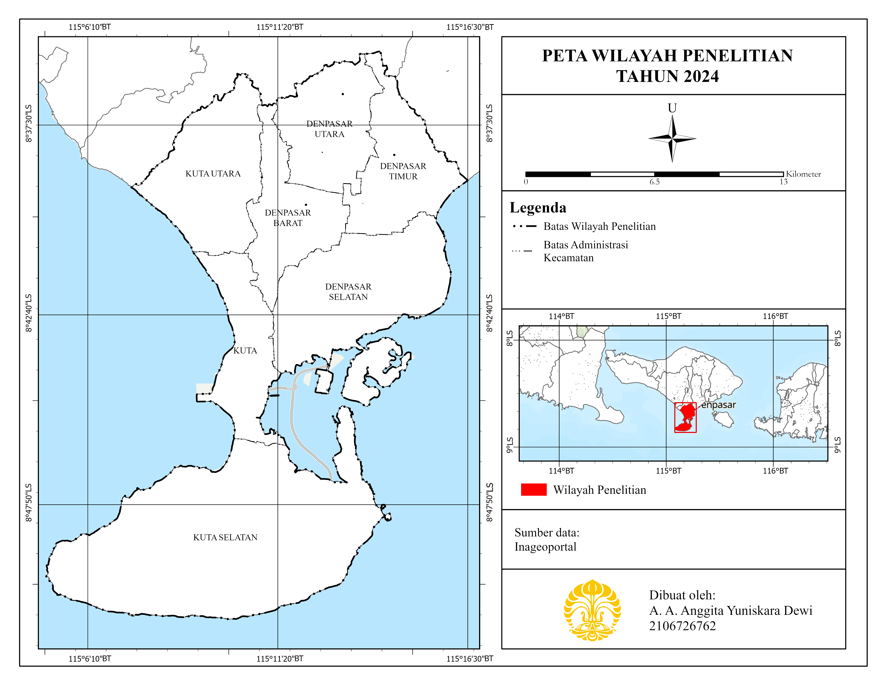
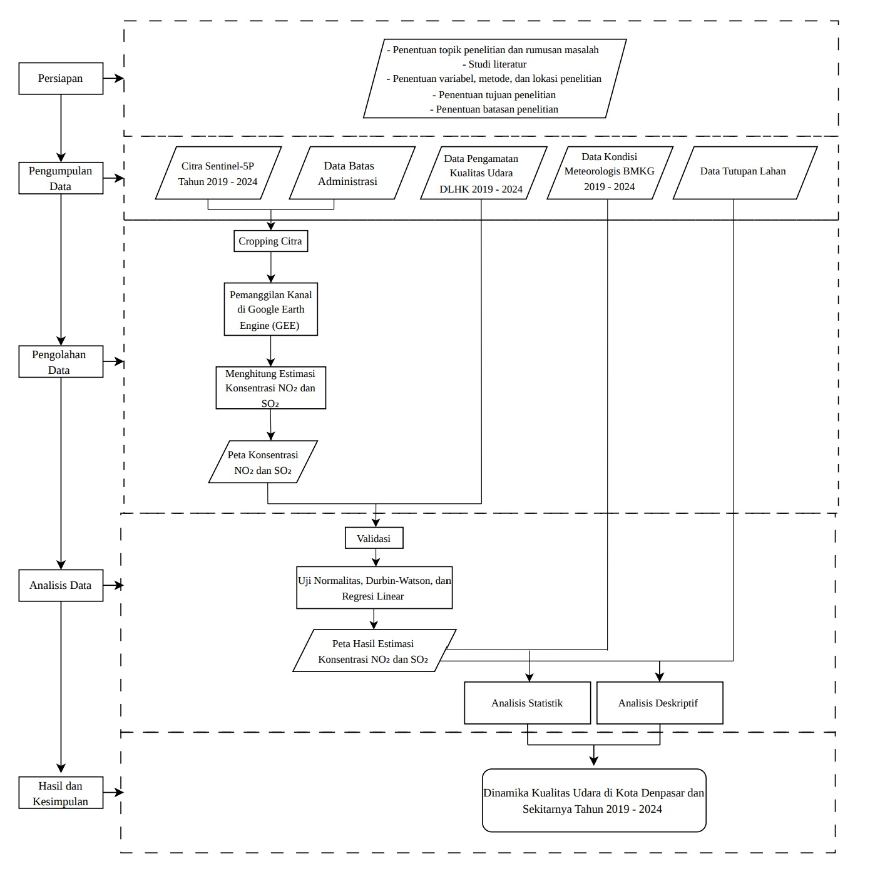
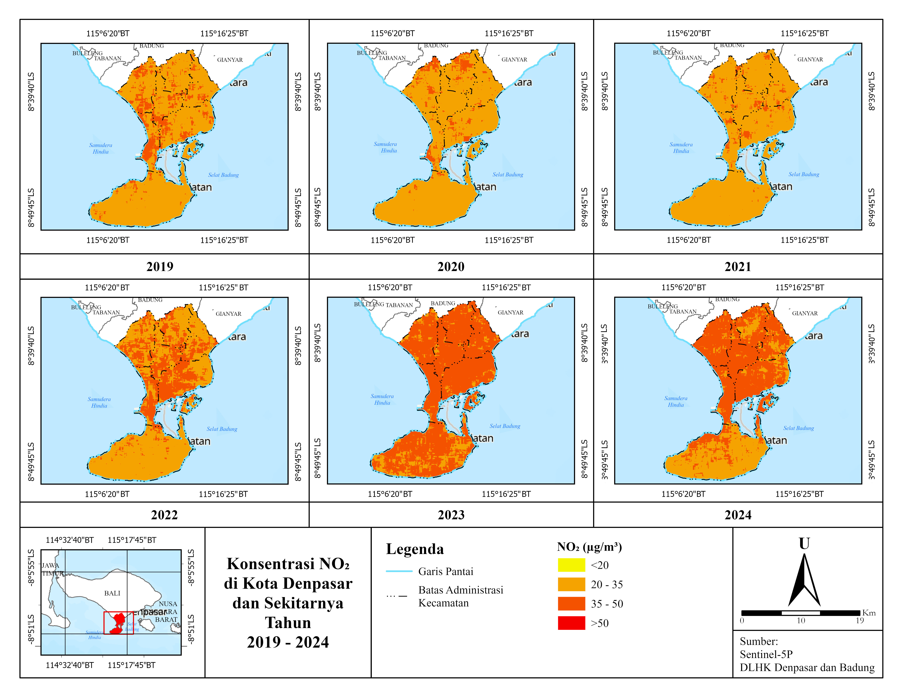
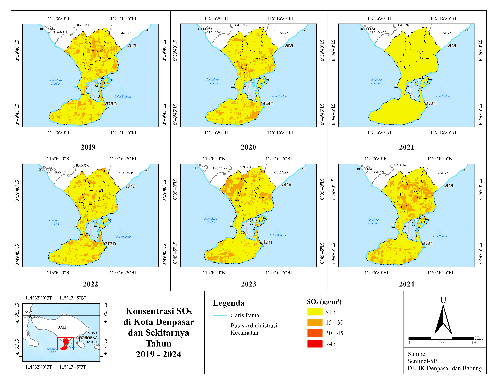
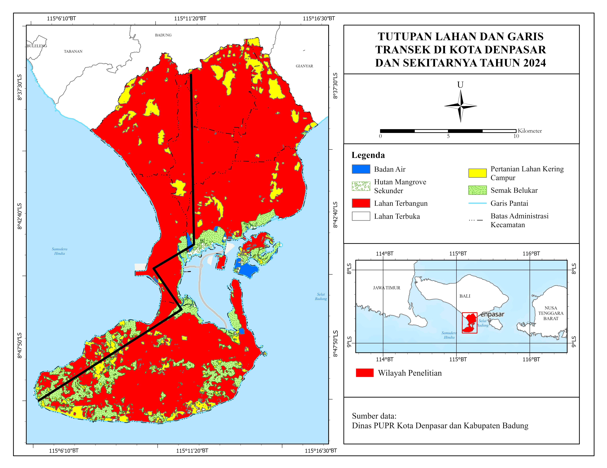

Dinamika Kualitas Udara di Kota Denpasar dan Sekitarnya Tahun 2019 hingga 2024
Latar belakang
Pencemaran udara adalah salah satu masalah lingkungan yang paling umum di kawasan perkotaan, baik di Indonesia maupun di dunia. Kota yang tumbuh pesat mendorong naiknya aktivitas sosial dan ekonomi, dan itu langsung menaikkan konsumsi energi. Kebutuhan energi tersebut masih sangat bergantung pada bahan bakar fosil. Saat dibakar, bahan bakar fosil melepaskan emisi, dan emisi yang dihasilkan dalam jumlah besar dari pembakaran yang tidak sempurna berpotensi menjadi pencemar.
Dua gas pencemar yang paling umum di wilayah perkotaan adalah nitrogen dioksida (NO2) dan sulfur dioksida (SO2). NO2 berasal terutama dari transportasi dan pembakaran bahan bakar fosil, sedangkan SO2 banyak dihasilkan oleh industri, pembangkit listrik, serta pembakaran batu bara dan minyak. Di Kota Denpasar, sumber utama SO2 adalah kendaraan bermotor di jalan raya. Keduanya juga menjadi parameter yang lazim dipakai dalam pemantauan Indeks Kualitas Udara di berbagai daerah di Indonesia.
Tingginya polusi di kota tidak hanya soal banyaknya sumber emisi. Karakteristik wilayahnya ikut menentukan. Dominasi lahan terbangun dengan kepadatan bangunan yang tinggi mempermudah polutan menumpuk, sementara kondisi meteorologis seperti angin, hujan, suhu, dan kelembapan memengaruhi seberapa jauh polutan tersebar. Itulah sebabnya udara di kota umumnya jauh lebih tercemar daripada wilayah di sekitarnya.
Kota Denpasar dan sekitarnya adalah wilayah perkotaan yang berkembang pesat, dan kualitas udaranya bergerak naik turun dalam beberapa tahun terakhir. Pada 2019, Denpasar tercatat sebagai salah satu dari 10 kota dengan kualitas udara terburuk di Indonesia. Tahun 2020, kota ini menerima Penghargaan Langit Biru atas perbaikan kualitas udaranya. Namun pada Agustus 2023, Denpasar kembali masuk daftar 10 daerah dengan kualitas udara terburuk. Dinamika seperti ini perlu dibaca dengan data, bukan hanya dari pemberitaan: bagaimana polutan terdistribusi di ruang dan waktu, dan faktor apa yang berkaitan dengannya.
Penelitian terdahulu umumnya memakai banyak parameter polutan. Penelitian ini memusatkan analisis pada dua polutan utama, NO2 dan SO2, lalu menghubungkannya dengan empat variabel meteorologis (kecepatan angin, kelembapan, suhu udara, dan curah hujan) sekaligus tutupan lahan. Kajian yang menelaah hubungan kualitas udara, kondisi meteorologis, dan karakteristik wilayah di Denpasar dan sekitarnya juga masih sedikit, sehingga penelitian ini memberikan gambaran yang baru untuk wilayah tersebut.
Pertanyaan dan tujuan penelitian
- Bagaimana distribusi spasiotemporal kualitas udara di Kota Denpasar dan sekitarnya pada tahun 2019 hingga 2024?
- Bagaimana hubungan antara kualitas udara dengan kondisi meteorologis dan tutupan lahan di wilayah tersebut?
Tujuannya adalah memetakan distribusi spasiotemporal kualitas udara, lalu menghubungkannya secara asosiatif dengan kondisi meteorologis dan tutupan lahan.
Wilayah penelitian
Wilayah kajian mencakup empat kecamatan di Kota Denpasar (Denpasar Utara, Selatan, Timur, dan Barat) serta tiga kecamatan penyangga di Kabupaten Badung (Kuta Utara, Kuta, dan Kuta Selatan). Ketiga kecamatan Badung dipilih karena berbatasan langsung dengan Denpasar, mengalami alih fungsi lahan yang pesat, dan memiliki kepadatan penduduk tertinggi di kabupaten tersebut. Wilayah ini berupa dataran rendah (0 sampai 75 mdpl) dengan lereng didominasi 0 sampai 5%, beriklim tropis dengan musim kemarau pada April sampai Oktober dan musim hujan pada November sampai Maret. Sebanyak 64,6% wilayahnya adalah lahan terbangun.
Perubahan tutupan lahan selama 2019 sampai 2024 memperlihatkan arah pembangunannya. Lahan terbangun bertambah sekitar 12,4 km2, sebagian besar dari berkurangnya lahan pertanian dan semak belukar, terutama di Kuta Selatan yang dulunya didominasi vegetasi dan pertanian.
| Tutupan lahan | 2019 (km2) | 2024 (km2) | Perubahan (km2) |
|---|---|---|---|
| Lahan terbangun | 227,75 | 240,14 | +12,39 |
| Pertanian lahan kering campur | 22,76 | 16,69 | −6,07 |
| Semak belukar | 33,87 | 28,06 | −5,81 |
| Hutan mangrove sekunder | 1,70 | 1,28 | −0,42 |

Data yang digunakan
Kualitas udara diukur dengan dua cara yang saling melengkapi. Pengukuran langsung di lapangan akurat, tetapi hanya tersedia di beberapa titik. Citra satelit menjangkau seluruh wilayah, tetapi harus diuji kesesuaiannya dengan kondisi nyata. Karena itu, citra satelit dipakai untuk memetakan seluruh wilayah, dan data lapangan dipakai untuk memvalidasinya. Konsentrasi polutan kemudian dibandingkan dengan baku mutu tahunan dalam Peraturan Pemerintah No. 22 Tahun 2021, yaitu 50 µg/m3 untuk NO2 dan 45 µg/m3 untuk SO2.
| Data | Jenis | Sumber | Keterangan |
|---|---|---|---|
| Konsentrasi NO2 dan SO2 | Sekunder | Citra Sentinel-5P (Google Earth Engine) | 2019–2024, resolusi 7 × 3,5 km |
| Pengamatan langsung NO2 dan SO2 | Primer | DLHK Kota Denpasar dan Kabupaten Badung | Passive sampler, dua kali setahun (musim hujan dan kemarau) |
| Kecepatan angin | Sekunder | ERA5 (Google Earth Engine) | Komponen u10 dan v10 pada ketinggian 10 m |
| Kelembapan udara | Sekunder | ERA5 (Google Earth Engine) | Kelembapan relatif permukaan |
| Suhu udara | Sekunder | Landsat 8 (Google Earth Engine) | Diturunkan dari band 10 (termal) |
| Curah hujan | Sekunder | CHIRPS (Google Earth Engine) | Data harian, dijumlahkan menjadi tahunan |
| Tutupan lahan | Sekunder | Dinas PUPR Kota Denpasar dan Kabupaten Badung | Skala 1:25.000, enam kelas |
| Kerapatan bangunan dan jaringan jalan | Sekunder | Landsat 8 (indeks NDBI) dan OpenStreetMap | Data pendukung karakter wilayah |
Metode
Penelitian berjalan dalam lima tahap: pengumpulan data, estimasi polutan dari citra satelit, validasi dengan data lapangan, pengolahan variabel pendukung, lalu analisis. Pengolahan memakai Google Earth Engine, ArcGIS Pro 3.2, SPSS, Microsoft Excel, dan Google Earth Pro.

1. Estimasi polutan dari citra Sentinel-5P
Konsentrasi NO2 dan SO2 diambil dari Sentinel-5P, satelit milik European Space Agency yang membawa sensor TROPOMI untuk mendeteksi gas di atmosfer. Datanya diolah di Google Earth Engine memakai kanal tropospheric NO2 dan SO2 column number density. Dataset yang dipakai adalah produk Level 3 dalam dua jenis, OFFL dan NRTI, karena data NRTI hanya tersedia sebulan sebelum digantikan OFFL. Level 3 dipilih karena tidak terikat pada satu granule orbit seperti Level 2, sehingga lebih mudah dianalisis per wilayah.
2. Validasi dengan data lapangan
Nilai estimasi satelit diuji terhadap hasil pengukuran passive sampler di titik stasiun yang sama. Pengujiannya berurutan:
- Uji normalitas Kolmogorov-Smirnov, untuk memastikan data berdistribusi normal.
- Uji autokorelasi Durbin-Watson, untuk memastikan residual tidak saling berkorelasi.
- Regresi linear sederhana (Model Summary, ANOVA, dan Coefficients), dengan data satelit sebagai variabel bebas dan data lapangan sebagai variabel terikat.
Persamaan regresi yang dihasilkan kemudian dipakai untuk mengubah nilai satelit menjadi estimasi konsentrasi di seluruh wilayah penelitian, termasuk area yang tidak terjangkau stasiun.
3. Klasifikasi konsentrasi
Hasil estimasi dikelompokkan ke dalam kelas supaya pola ruangnya mudah dibaca. Jumlah kelas ditentukan dengan rumus Kingma, k = 1 + 3,3 log(n), yang menghasilkan nilai mendekati 4. Batas kelasnya diselaraskan dengan baku mutu PP No. 22 Tahun 2021 sehingga jelas mana yang berada di bawah, mendekati, dan melebihi ambang batas.
| Kelas | NO2 (µg/m3) | SO2 (µg/m3) |
|---|---|---|
| 1 | < 20 | < 15 |
| 2 | 20 – 35 | 15 – 30 |
| 3 | 35 – 50 | 30 – 45 |
| 4 | > 50 | > 45 |
4. Pengolahan variabel meteorologis
Setiap variabel diolah menjadi peta tahunan 2019 sampai 2024:
- Kecepatan angin: dihitung dari komponen u10 dan v10 dengan rumus √(u² + v²), lalu dirata-ratakan per tahun.
- Kelembapan: rata-rata tahunan kelembapan relatif permukaan dari ERA5.
- Suhu udara: band 10 Landsat 8 diubah dari nilai digital menjadi radiance, lalu brightness temperature, kemudian dikonversi dari Kelvin ke Celsius.
- Curah hujan: data harian CHIRPS dijumlahkan menjadi total tahunan.
Raster tahunan diekspor ke ArcGIS Pro, diubah menjadi titik, diberi sistem koordinat, diinterpolasi dengan metode IDW agar menjadi permukaan yang kontinu, lalu dipotong sesuai batas wilayah penelitian.
5. Analisis
- Spasiotemporal dan deskriptif: membandingkan pola sebaran polutan antar tahun dan antar wilayah, termasuk terhadap tutupan lahan.
- Statistik: nilai polutan dan variabel meteorologis diekstrak pada 60 titik sebaran dengan Extract Multi Values to Points. Setelah uji normalitas Kolmogorov-Smirnov, hubungan diukur dengan korelasi Pearson Product Moment pada taraf signifikansi 0,05.
- Tutupan lahan dengan garis transek: empat segmen transek (A–B, B–C, C–D, dan D–E) ditarik dari utara ke selatan, dari pusat kota yang didominasi lahan terbangun menuju bagian selatan yang didominasi lahan non-terbangun. Konsentrasi polutan dibaca sepanjang garis tersebut. Tutupan lahan yang dipakai adalah data 2024, karena perubahan luas tutupan lahan selama 2019 sampai 2024 hanya sekitar 4%.
Hasil
Estimasi satelit terbukti sesuai dengan data lapangan
Sebelum dipakai untuk memetakan seluruh wilayah, data satelit harus lolos validasi. Hasilnya menunjukkan hubungan yang kuat dan signifikan untuk kedua polutan, sehingga data Sentinel-5P layak dipakai di wilayah yang tidak tercakup stasiun.
| Parameter | Normalitas (Sig.) | Durbin-Watson | R | R2 | F (Sig.) | Persamaan regresi |
|---|---|---|---|---|---|---|
| NO2 | 0,200 | 1,842 | 0,833 | 0,693 | 158,184 (0,000) | Y = 78,614X − 4,760 |
| SO2 | 0,200 | 1,904 | 0,799 | 0,638 | 123,417 (0,000) | Y = 8,337X + 2,387 |
Dengan 72 pasang data, sekitar 69,3% variasi data lapangan NO2 dan 63,8% variasi SO2 dapat dijelaskan oleh data satelit. Asumsi normalitas dan bebas autokorelasi terpenuhi untuk keduanya.
Distribusi NO2 dan SO2 dari tahun ke tahun
Selama enam tahun, seluruh konsentrasi NO2 dan SO2 tetap berada di bawah baku mutu tahunan. Meski begitu, polanya berubah dan mengikuti peristiwa yang terjadi di wilayah ini.
| Tahun | Pola NO2 | Pola SO2 | Faktor yang menyertai |
|---|---|---|---|
| 2019 | Didominasi 20–35 µg/m3; kelas 35–50 di tengah hingga selatan (Kuta, Denpasar Barat, Denpasar Selatan) | Didominasi <15 µg/m3; kelas 15–30 di tengah, utara, dan tenggara | Kepadatan penduduk dan bangunan tinggi di pusat kota |
| 2020 | Kelas 35–50 menyusut; justru muncul peningkatan di utara | Kelas <15 meluas; kelas 15–30 menyusut | Pembatasan aktivitas masa pandemi; pembakaran sampah skala besar di Peguyangan Utara (Mei) |
| 2021 | Menurun di sebagian besar wilayah | Terendah selama pengamatan | Pembatasan aktivitas yang lebih ketat dan belum pulih |
| 2022 | Kelas 35–50 meluas di Denpasar Barat, Denpasar Selatan, dan Kuta | Kelas 15–30 muncul kembali di tengah dan tenggara | Pemulihan ekonomi pasca-pandemi |
| 2023 | Puncak tertinggi; kelas 35–50 mendominasi hampir seluruh wilayah | Kelas 15–30 meluas, terutama di utara (Kuta Utara) | El Niño (sekitar 90 hari tanpa hujan di Bali) dan kebakaran TPA Sarbagita Suwung |
| 2024 | Sedikit membaik, terutama di Kuta Selatan; kelas 35–50 tetap dominan di tengah | Kelas 15–30 meluas di Denpasar Barat dan Denpasar Selatan | Aktivitas padat di lahan terbangun |
Polanya terbaca sebagai tiga fase. Pada 2019, konsentrasi tertinggi sudah terkumpul di bagian tengah dan selatan yang padat penduduk dan bangunan. Pada 2020 dan 2021, pembatasan mobilitas selama pandemi menurunkan emisi transportasi, industri, dan pariwisata. Jumlah wisatawan mancanegara turun 42,3% pada 2020, dan konsentrasi SO2 mencapai titik terendah pada 2021. Setelah itu, 2022 sampai 2024 menjadi periode dengan rerata konsentrasi tertinggi. Aktivitas kembali pulih pada 2022, lalu 2023 mencatat lonjakan terbesar karena dua hal yang bertemu. Kemarau panjang akibat El Niño membuat polutan tidak tercuci hujan, dan kebakaran TPA Suwung menambah emisi di wilayah utara. Tahun 2024 menunjukkan perbaikan kecil, tetapi belum kembali ke tingkat sebelumnya.


Secara ruang, konsentrasi yang lebih tinggi berulang kali muncul di Denpasar Barat, Denpasar Selatan, dan Kuta. Ketiganya adalah kecamatan dengan lahan terbangun, kepadatan bangunan, dan kepadatan penduduk tertinggi. Denpasar Barat mencapai 7.988 jiwa/km2 dan Kuta 7.556 jiwa/km2, sementara Kuta Selatan hanya 567 jiwa/km2.
Hubungan dengan kondisi meteorologis
Kalau dilihat dari tahun ke tahun, pola yang muncul sesuai dengan teori. Tahun 2021 memiliki angin kencang dan curah hujan tertinggi (di atas 1.900 mm, hingga lebih dari 2.250 mm di barat laut dan barat daya), dan konsentrasi polutannya paling rendah. Tahun 2023 memiliki hujan terendah (di bawah 1.550 mm) dan angin lemah, dan konsentrasinya paling tinggi. Suhu dan polutan juga naik dan turun bersamaan pada 2019, 2020, 2021, 2023, dan 2024. Pola ini cocok dengan mekanisme washing effect oleh hujan dan dispersi polutan oleh angin.
Namun hubungan itu tidak konsisten. Pada 2022, angin kencang dan hujan tinggi tidak diikuti turunnya polutan. Secara ruang, wilayah berangin kencang atau berhujan tinggi tidak otomatis memiliki konsentrasi rendah. Sebaran kelembapan nyaris sama setiap tahun (tertinggi di utara, di atas 83,03%, dan terendah di pesisir selatan, di bawah 79,09%) dan tidak mengikuti sebaran polutan. Uji korelasi mendukung temuan ini:
| Variabel | r dengan NO2 (Sig.) | r dengan SO2 (Sig.) | Kesimpulan |
|---|---|---|---|
| Kecepatan angin | −0,084 (0,128) | −0,333 (0,117) | Tidak signifikan |
| Kelembapan | 0,293 (0,230) | 0,076 (0,169) | Tidak signifikan |
| Suhu udara | 0,041 (0,458) | 0,048 (0,383) | Tidak signifikan |
| Curah hujan | −0,055 (0,317) | −0,523 (0,321) | Tidak signifikan |
Seluruh nilai signifikansi berada di atas 0,05 (N = 360). Arah hubungan angin dan hujan memang negatif seperti yang diteorikan, tetapi tidak cukup kuat untuk menjelaskan sebaran polutan. Artinya, meteorologi ikut memengaruhi fluktuasi dari tahun ke tahun, tetapi bukan faktor yang menentukan pola ruang polutan di wilayah ini.
Hubungan dengan tutupan lahan
Berbeda dengan meteorologi, tutupan lahan menunjukkan kecenderungan yang jelas. Empat garis transek dari utara ke selatan membandingkan konsentrasi polutan pada lahan terbangun dan non-terbangun:
| Transek | Tutupan yang dilewati | NO2 | SO2 |
|---|---|---|---|
| A – B | Hampir seluruhnya lahan terbangun, berakhir di semak belukar | Lahan terbangun 28–35 µg/m3 (puncak >40 pada 2024); semak belukar 25–30 µg/m3 | Lahan terbangun lebih tinggi dan tidak stabil (>20 µg/m3 pada 2019 dan 2024); semak belukar <10 µg/m3 |
| B – C | Badan air, semak belukar, lalu lahan terbangun | Lahan terbangun tertinggi (mendekati 35 µg/m3 pada 2022); badan air dan semak belukar 25–30 µg/m3 | Fluktuatif; lonjakan hingga hampir 20 µg/m3 di lahan terbangun (2023) |
| C – D | Lahan terbangun, pertanian, semak belukar | Tinggi dan merata di lahan terbangun, sedikit menurun di semak belukar | Lebih fluktuatif; lonjakan di lahan terbangun (2019 dan 2021) |
| D – E | Didominasi semak belukar dan pertanian, selang-seling lahan terbangun | Lebih rendah dan stabil; sedikit naik di lahan terbangun | Lebih rendah dan stabil di belukar dan pertanian |

Untuk NO2, polanya konsisten di keempat transek: konsentrasi lebih tinggi di lahan terbangun dan lebih rendah di lahan vegetatif. Bangunan yang rapat dan tinggi menghambat sirkulasi udara sehingga polutan menumpuk di permukaan, sedangkan area terbuka seperti belukar dan sawah membiarkan polutan tersebar lebih efektif. Untuk SO2, kecenderungannya sama tetapi lebih lemah dan lebih fluktuatif. SO2 lebih mudah bereaksi di atmosfer dan lebih sensitif terhadap kondisi meteorologis, sehingga sebarannya tidak selalu mengikuti tutupan lahan.
Kesimpulan
Pertama, soal distribusi. Konsentrasi NO2 dan SO2 di Kota Denpasar dan sekitarnya berfluktuasi selama 2019 sampai 2024. Konsentrasi yang lebih tinggi terpusat di wilayah tengah dan selatan yang didominasi lahan terbangun dengan kepadatan bangunan dan penduduk tinggi. Secara waktu, polutan turun pada masa pandemi (2020 dan 2021), lalu naik pada 2022 sampai 2024 dengan puncak pada 2023 akibat kemarau panjang El Niño dan kebakaran TPA Suwung. Meski meningkat, seluruh nilainya tetap di bawah baku mutu yang ditetapkan pemerintah.
Kedua, soal faktor yang berkaitan. Kondisi meteorologis (kecepatan angin, kelembapan, suhu udara, dan curah hujan) tidak berhubungan signifikan dengan sebaran konsentrasi polutan. Tutupan lahan justru menunjukkan kecenderungan hubungan: positif dengan lahan terbangun dan negatif dengan lahan non-terbangun. Hubungan SO2 dengan tutupan lahan lebih lemah dibanding NO2 karena sifat kimianya yang lebih reaktif.
Temuan ini menunjukkan bahwa kualitas udara di Denpasar dibentuk terutama oleh karakter wilayah dan aktivitas manusia, bukan semata oleh cuaca. Karena lahan terbangun terus bertambah, wilayah tengah dan selatan perlu mendapat perhatian lebih dalam pengendalian emisi dan penataan ruang. Pemetaan seperti ini bisa menjadi dasar bagi pihak terkait untuk menentukan kawasan yang rawan mengalami penurunan kualitas udara.
← View other projects